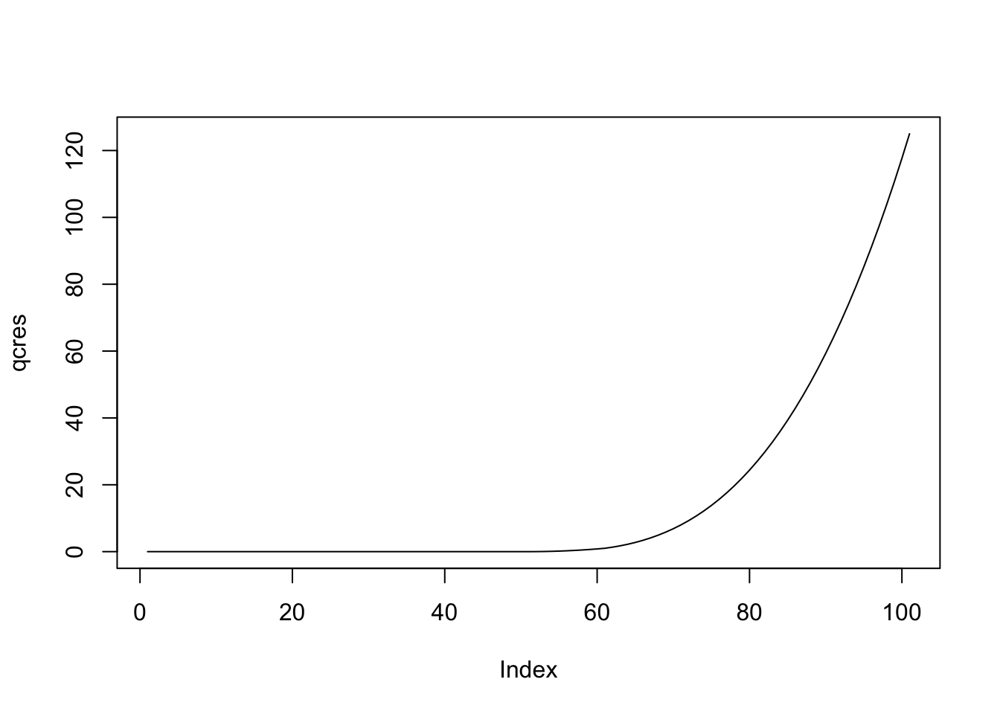

[,1] [,2] [,3] [,4] [,5]
[1,] 1 1 1 1 1
[2,] 1 1 1 1 1
[3,] 1 1 1 1 1
[4,] 1 1 1 1 1
[5,] 1 1 1 1 1P2 // Матрицы и списки. Функции
Основные задания
#1
Создайте матрицу, размером 5×5, из единиц. Сохраните её в переменную m.
#2
Замените все некрайние значения на нули. Перезапишите переменную m.
[,1] [,2] [,3] [,4] [,5]
[1,] 1 1 1 1 1
[2,] 1 0 0 0 1
[3,] 1 0 0 0 1
[4,] 1 0 0 0 1
[5,] 1 1 1 1 1Подсказки
Как делать задание?
Что надо сделать?
Ответ неверный
#3
Выделите из матрицы m:
- вторую строку
[1] 1 0 0 0 1- первый столбец
[1] 1 1 1 1 1- строки с третьей по пятую
[,1] [,2] [,3] [,4] [,5]
[1,] 1 0 0 0 1
[2,] 1 0 0 0 1
[3,] 1 1 1 1 1- второй и третий столбы
[,1] [,2]
[1,] 1 1
[2,] 0 0
[3,] 0 0
[4,] 0 0
[5,] 1 1#4
Сравните вторую строку и третий столбец матрицы m.
[1] TRUE TRUE TRUE TRUE TRUE#5
Создайте таблицу умножения. Это должна быть матрица, размером 9×9, в которой на пересечении \(i\)-ой строки и \(j\)-го столбца находится произведение \(i \times j\). Сохраните результат в переменную multab.
[,1] [,2] [,3] [,4] [,5] [,6] [,7] [,8] [,9]
[1,] 1 2 3 4 5 6 7 8 9
[2,] 2 4 6 8 10 12 14 16 18
[3,] 3 6 9 12 15 18 21 24 27
[4,] 4 8 12 16 20 24 28 32 36
[5,] 5 10 15 20 25 30 35 40 45
[6,] 6 12 18 24 30 36 42 48 54
[7,] 7 14 21 28 35 42 49 56 63
[8,] 8 16 24 32 40 48 56 64 72
[9,] 9 18 27 36 45 54 63 72 81#6
Поработайте с переменной multab.
- выделите 71-ый элемент матрицы
[1] 64- замените все значения, меньшие 10, на пропуски (
NA)
[,1] [,2] [,3] [,4] [,5] [,6] [,7] [,8] [,9]
[1,] NA NA NA NA NA NA NA NA NA
[2,] NA NA NA NA 10 12 14 16 18
[3,] NA NA NA 12 15 18 21 24 27
[4,] NA NA 12 16 20 24 28 32 36
[5,] NA 10 15 20 25 30 35 40 45
[6,] NA 12 18 24 30 36 42 48 54
[7,] NA 14 21 28 35 42 49 56 63
[8,] NA 16 24 32 40 48 56 64 72
[9,] NA 18 27 36 45 54 63 72 81#7
Примените к матрице multab функции sum(), mean(), median(), которые мы применяли к векторам. Учтите, что в данных есть пропуски — ведь мы их туда своими руками добавили.
Что получилось? Почему так?
[1] 1895[1] 32.67241[1] 28#8
8.1 Для матрицы m посчитайте сумму:
- по каждой строке
[1] 5 2 2 2 5- по каждому столбцу
[1] 5 2 2 2 58.2 Для матрицы multab посчитайте сумму по каждому столбцу.
[1] 0 70 117 168 220 264 308 352 396Подсказка
apply()
#9
Создайте список, который будет содержать следующие элементы:
- вектор
lettersпод названиемalphabet - значение
TRUEпод названиемlogic - матрицу
multabпод названиемmultab
Сохраните список в переменную first_list.
$alphabet
[1] "a" "b" "c" "d" "e" "f" "g" "h" "i" "j" "k" "l" "m" "n" "o" "p" "q" "r" "s"
[20] "t" "u" "v" "w" "x" "y" "z"
$logic
[1] TRUE
$multab
[,1] [,2] [,3] [,4] [,5] [,6] [,7] [,8] [,9]
[1,] NA NA NA NA NA NA NA NA NA
[2,] NA NA NA NA 10 12 14 16 18
[3,] NA NA NA 12 15 18 21 24 27
[4,] NA NA 12 16 20 24 28 32 36
[5,] NA 10 15 20 25 30 35 40 45
[6,] NA 12 18 24 30 36 42 48 54
[7,] NA 14 21 28 35 42 49 56 63
[8,] NA 16 24 32 40 48 56 64 72
[9,] NA 18 27 36 45 54 63 72 81#10
Выделите из списка first_list:
- первый элемент (по номеру) — должен вернуться список
$alphabet
[1] "a" "b" "c" "d" "e" "f" "g" "h" "i" "j" "k" "l" "m" "n" "o" "p" "q" "r" "s"
[20] "t" "u" "v" "w" "x" "y" "z"- матрицу
multab(по названию) — должен вернуться список
$multab
[,1] [,2] [,3] [,4] [,5] [,6] [,7] [,8] [,9]
[1,] NA NA NA NA NA NA NA NA NA
[2,] NA NA NA NA 10 12 14 16 18
[3,] NA NA NA 12 15 18 21 24 27
[4,] NA NA 12 16 20 24 28 32 36
[5,] NA 10 15 20 25 30 35 40 45
[6,] NA 12 18 24 30 36 42 48 54
[7,] NA 14 21 28 35 42 49 56 63
[8,] NA 16 24 32 40 48 56 64 72
[9,] NA 18 27 36 45 54 63 72 81- матрицу
multab— должна вернуться матрица
[,1] [,2] [,3] [,4] [,5] [,6] [,7] [,8] [,9]
[1,] NA NA NA NA NA NA NA NA NA
[2,] NA NA NA NA 10 12 14 16 18
[3,] NA NA NA 12 15 18 21 24 27
[4,] NA NA 12 16 20 24 28 32 36
[5,] NA 10 15 20 25 30 35 40 45
[6,] NA 12 18 24 30 36 42 48 54
[7,] NA 14 21 28 35 42 49 56 63
[8,] NA 16 24 32 40 48 56 64 72
[9,] NA 18 27 36 45 54 63 72 81- логический элемент
logic— должен вернуться вектор
[1] TRUE#11
Выделите из списка first_list:
- первые 5 элементов вектора
alphabet
[1] "a" "b" "c" "d" "e"- два последних столбца матрицы
multab
[,1] [,2]
[1,] NA NA
[2,] 16 18
[3,] 24 27
[4,] 32 36
[5,] 40 45
[6,] 48 54
[7,] 56 63
[8,] 64 72
[9,] 72 81с. третий элемент логического вектора logic
[1] NA#12
- Напишите функцию
mul(x, y), которая будет перемножать два своих аргумента.
mul(2,3)[1] 6mul(-4, -8)[1] 32mul(0.5, 6)[1] 3- Напишите функцию
sqrtn(x, n), которая будет извлекать корень любой степени из любого числа.
sqrtn(4, 2)[1] 2sqrtn(27, 3)[1] 3sqrtn(30, -5)[1] 0.5064957sqrtn(-2, 2)[1] NaNПодсказка
\[ \sqrt[n]{x} = x^{\frac{1}{n}} \]
#13
Модифицируйте функцию из предыдущего задания, чтобы она могла обрабатывать отрицательный x при любом n — то есть функция не должна возвращать NaN.
[1] 2[1] 3[1] 0.5064957[1] 0+1.414214i[1] 1.5+2.598076iПодсказка
Чтобы извлечь корень из отрицательного числа, необходимо привести его типу complex.
#14
Поведением функции мы часто хотим управлять. Допустим, мы не хотим, чтобы наша функция по умолчанию приводила отрицательный аргумент к комплексному типу данных. Мы хотим, чтобы дефолтно она работала в вещественных числах, привычных нам, а уж если нам очень понадобиться, мы сами скажем ей, чтобы она использовала всю свою комплексную мощь.
Модифицируйте функцию из предыдущего задания так, чтобы по умолчанию она возвращала NaN, если x отрицательный, но могла вычислить значение при необходимости.
sqrtn(4, 2)[1] 2sqrtn(27, 3)[1] 3sqrtn(30, -5)[1] 0.5064957sqrtn(-2, 2)[1] NaNsqrtn(-2, 2, complex = TRUE)[1] 0+1.414214iПодсказка
Нужен дополнительный аргумент (в примерах он назван complex), который по умолчанию будет равен FALSE.
#15
Напишите функцию, которая реализует следующую математическую функцию:
\[ f(x) = \cases{ 0, \quad x < 0 \\ x^2, \quad 0 \leq x \leq 1 \\ x^3, \quad x > 1} \]
Сохраните её в переменную quad_cube и выполните на векторе \(\pmatrix{-5.0 & -4.9 & -4.8 & \dots -0.9 & 0.0 & 0.1 & \dots & 4.8 & 4.9 & 5.0}\).
Сохраните результат в переменную qcres.
qcres [1] 0.000 0.000 0.000 0.000 0.000 0.000 0.000 0.000 0.000
[10] 0.000 0.000 0.000 0.000 0.000 0.000 0.000 0.000 0.000
[19] 0.000 0.000 0.000 0.000 0.000 0.000 0.000 0.000 0.000
[28] 0.000 0.000 0.000 0.000 0.000 0.000 0.000 0.000 0.000
[37] 0.000 0.000 0.000 0.000 0.000 0.000 0.000 0.000 0.000
[46] 0.000 0.000 0.000 0.000 0.000 0.000 0.010 0.040 0.090
[55] 0.160 0.250 0.360 0.490 0.640 0.810 1.000 1.331 1.728
[64] 2.197 2.744 3.375 4.096 4.913 5.832 6.859 8.000 9.261
[73] 10.648 12.167 13.824 15.625 17.576 19.683 21.952 24.389 27.000
[82] 29.791 32.768 35.937 39.304 42.875 46.656 50.653 54.872 59.319
[91] 64.000 68.921 74.088 79.507 85.184 91.125 97.336 103.823 110.592
[100] 117.649 125.000Воспользуйтесь командой ниже, чтобы визуализировать вектор и сравнить результат с ожидаемым.
plot(qcres, type = "l")
Подсказка
Может быть два решения:
- для одного понадобиться
for (variable in vector) {
...
}- для другого
Map(function, vector)
unlist(list)#16
В задании 8 мы считали сумму по столбцам матрицы. Но что делать, если нам нужно посчитать несколько статистик по столбцам?
Напишите функцию mat_desc(m), которая будет считать сумму, среднее и медиану по столбцам матрицы.
Фунция должна:
- принимать на вход матрицу произвольного размера
- возвращать матрицу с числом столбцов, равным числу столбцов входной матрицы, в которой в первой строке будут суммы, во второй — средние, в третьей — медианы, рассчитанные по столбцам входной матрицы
- строки матрицы должны быть подписаны
sum,meanиmedianсоответственно
[,1] [,2] [,3] [,4] [,5]
sum 5 2.0 2.0 2.0 5
mean 1 0.4 0.4 0.4 1
median 1 0.0 0.0 0.0 1Подсказки
apply()
rbind()
rownames()#17
Создадим список с результатами статистических тестов. Вот такой:
ttests <- list(test1 = list(t = 1.33,
p = 0.1),
test2 = list(t = 2.306,
p = 0.025),
test3 = list(t = 3.527,
p = 0.001))
ttests$test1
$test1$t
[1] 1.33
$test1$p
[1] 0.1
$test2
$test2$t
[1] 2.306
$test2$p
[1] 0.025
$test3
$test3$t
[1] 3.527
$test3$p
[1] 0.001Этот список состоит из результатов неких трёх t-тестов — test1, test2, test3 — которые являются его элементами. В свою очередь каждый результат также является списком и состоит из двух значений — t и p.
Вытащите из списка ttests p-значения. Результатом должен быть вектор из трех значений.
[1] 0.100 0.025 0.001Подсказка
Надо пройтись по элементами списка и вытащить из них нужный элемент. Подойдет
for (variable in vector) {
...
}#18
Функции, которые внутри себя содержат цикл — это что-то сложное. Можно вынести его из функции и использовать функцию внутри цикла. Но и то, и другое выглядит громоздко и работает медленно. Есть более красивый вариант.
Ниже представлена функция из задания 15, из которой удален цикл — теперь она может работать только с одним значением x (вектором, длины 1). Согласитель, читаться стало проще:
quad_cube2 <- function(x) {
if (x < 0) return(0)
else if (x > 1) return(x^3)
else return(x^2)
}C помощью функции Map() выполните её на векторе \(\pmatrix{-5.0 & -4.9 & -4.8 & \dots -0.9 & 0.0 & 0.1 & \dots & 4.8 & 4.9 & 5.0}\).
Изучите результат. При необходимости, переведите его в вектор.
Сохраните результат в переменную qcres2.
Воспользуйтесь командой ниже, чтобы убедиться, что мы получили тот же самый результат.
plot(qcres2, type = "l")Подсказки
Map(function, vector)
unlist(list)#19
Давайте аналогичным способом возведем каждый элемент вектора в квадрат. Возьмите вектор \(\pmatrix{1 & 2 & 3 & 4 & 5}\) и возведите каждый его элемент в квадрат с помощью функции Map().
Можно написать для этого функцию, но она будет очень короткая и простая и лишь займет место в скрипте. Пропишите функцию прямо в функции Map().
[1] 1 4 9 16 25Подсказка
Map(function(x) ..., vector)#20
Вытащите p-значения из списка ttests из задания 17 без использования цикла и создания функций. Результат должен быть вектором.
test1 test2 test3
0.100 0.025 0.001 Подсказки
Map(function, list)
unlist(list)Map(function(x) ..., list)Дополнительные задания
#1
Сгенерируйте 5 [независимых] выборок по 30 наблюдений из генеральной совокупности с нормальным распределением rnorm(..., mean = 10, sd = 20). Результат генерации должен быть представлен в виде матрицы 30×5, где каждый столбец — это одна выборка. Сохраните результат генерации в переменной sim.
Пример сгенерирован при set.seed(24).
[,1] [,2] [,3] [,4] [,5]
[1,] -0.9176152 9.3252415 39.041504 5.3446569 30.2567252
[2,] 20.7317061 -1.7085511 18.164031 -18.4072626 10.5068688
[3,] 18.3924630 22.2570273 1.193319 -6.2664546 -0.1430004
[4,] -1.6725440 40.3424499 36.371324 19.2213861 -0.1388647
[5,] 26.9492003 23.1476087 21.427732 5.7021278 15.2997753
[6,] 15.3204396 -11.4836267 -15.599744 12.7789050 21.8336348
[7,] 18.8917054 -79.3912882 -14.777592 26.8846072 4.2331858
[8,] 0.6700975 17.3809004 -8.451822 -16.1690067 -0.5814076
[9,] -6.9674009 13.3845338 36.992241 30.9033732 6.4026923
[10,] 10.0462388 -26.4438064 -21.352332 34.2034785 -8.6087539
[11,] -16.3381625 11.3471540 12.875999 11.6628735 -39.3491209
[12,] 21.9653823 10.3421192 -7.722200 65.6989406 8.9918515
[13,] -5.2442874 3.1268126 9.488516 21.9056464 14.9287636
[14,] -18.5818061 -3.3578439 3.445292 11.5533270 40.6272574
[15,] 16.6448890 4.8851086 8.480780 -1.1739321 21.8327574
[16,] 0.6187862 0.7758408 -17.093273 -6.1353535 -22.3708390
[17,] 3.3002641 39.4328316 -9.216176 -0.2141812 -2.6986435
[18,] 40.7250431 8.1607937 14.499087 -1.1297424 37.1350898
[19,] 22.1998907 16.7038860 7.536791 14.8225033 -5.1605424
[20,] 20.3267140 5.3627081 10.020820 -1.5067405 17.5072807
[21,] 8.5138288 20.5330512 -1.424865 49.7113946 23.3432774
[22,] -2.1031389 -11.4725213 18.452436 19.2640549 9.8284752
[23,] -24.1929037 25.3936375 -23.467716 15.8486882 11.8488091
[24,] 4.6261379 45.4181075 -12.720519 -0.2796531 16.4056528
[25,] -2.9718301 6.0763562 17.224250 -14.7147764 13.3018250
[26,] 8.1177975 14.0949947 31.137284 -40.0246250 -11.0641347
[27,] 8.2891810 -1.9319614 -29.858409 -17.9325648 18.9478935
[28,] 12.3906214 33.5649550 25.287701 -7.9827048 31.1427365
[29,] 7.6740721 30.9884244 10.143307 -16.5459271 -19.5031466
[30,] -8.8765447 21.2196233 12.039487 14.0573286 14.0146572#2
Посчитайте среднее (mean()) и стандартное отклонение (sd()) по каждой сгенерированной выборке.
[1] 6.617608 9.582486 5.737908 7.036012 8.625692[1] 14.40673 23.38371 18.80144 21.72927 17.70765#3
Продолжим работу над функцией из задания 14.
Модифицируйте её так, чтобы она выводила предупреждение (warning) с содержанием Warning: x has negative value, если в качестве аргумента x передано отрицательное число и аргумент complex равен FALSE.
sqrtn(4, 2)[1] 2sqrtn(27, 3)[1] 3sqrtn(30, -5)[1] 0.5064957sqrtn(-2, 2)Warning in sqrtn(-2, 2): x has negative value[1] NaNsqrtn(-2, 2, complex = TRUE)[1] 0+1.414214iПодсказки
warning()
"\n" # new line#4
Продолжим работу над функцией из предыдущего задания.
Модифицируйте её так, чтобы она выводила сообщение (message) с содержанием x coerced to complex, если в качестве аргумента x передано отрицательное число и аргумент complex равен TRUE, чтобы пользователь был проинформирован о том, что происходит.
sqrtn(4, 2)[1] 2sqrtn(27, 3)[1] 3sqrtn(30, -5)[1] 0.5064957sqrtn(-2, 2)Warning in sqrtn(-2, 2): x has negative value[1] NaNsqrtn(-2, 2, complex = TRUE)x coerced to complex[1] 0+1.414214iПодсказка
message()#5
Продолжим работу над функцией из предыдущего задания и доведем её до совершенства.
Модифицируйте её так, чтобы она заканчивала работу с ошибкой (error) с содержанием argument `complex` must be a logical constant, если в качестве аргумента complex передано какое-либо значение, кроме логического.
sqrtn(4, 2)[1] 2sqrtn(27, 3)[1] 3sqrtn(30, -5)[1] 0.5064957sqrtn(-2, 2)Warning in sqrtn(-2, 2): x has negative value[1] NaNsqrtn(-2, 2, complex = TRUE)x coerced to complex[1] 0+1.414214isqrtn(-2, 2, complex = "no")Error in sqrtn(-2, 2, complex = "no"): argument `complex` must be a logical constantПодсказка
stop()#6
В задании 16 мы сделали функцию, которая считает сумму, среднее и медиану по столбцам матрицы.
а. Попробуйте вызвать её на матрице multab. Каков результат? Почему так?
- Модифицируйте функцию так, чтобы она могла принимать на вход аргументы, необходимые для её внутренних функций, и пробрасывать их им. Функция должна корректно обрабатывать любые необходимые аргументы.
mat_desc(multab) [,1] [,2] [,3] [,4] [,5] [,6] [,7] [,8] [,9]
sum NA NA NA NA NA NA NA NA NA
mean NA NA NA NA NA NA NA NA NA
median NA NA NA NA NA NA NA NA NAmat_desc(multab, na.rm = TRUE) [,1] [,2] [,3] [,4] [,5] [,6] [,7] [,8] [,9]
sum 0 70 117.0 168 220.0 264 308.0 352 396.0
mean NaN 14 19.5 24 27.5 33 38.5 44 49.5
median NA 14 19.5 24 27.5 33 38.5 44 49.5mat_desc(sim) [,1] [,2] [,3] [,4] [,5]
sum 198.528225 287.474567 172.137252 211.080367 258.770756
mean 6.617608 9.582486 5.737908 7.036012 8.625692
median 7.895935 10.844637 8.984648 5.523392 11.177839mat_desc(sim, trim = .5) [,1] [,2] [,3] [,4] [,5]
sum 199.028225 287.97457 172.637252 211.580367 259.27076
mean 7.895935 10.84464 8.984648 5.523392 11.17784
median 7.895935 10.84464 8.984648 5.523392 11.17784Подсказка
help("...")#7
До этого мы генерировали случайные вектора только из нормального распределения (rnorm()), однако мир распределений одним нормальным не ограничивается.
Напишите функцию, которая генерирует [независимые] выборки из любого заданного распределения.
Функция — назовем её gen_dist — должна:
- принимать на вход следующие параметры:
- количество выборок, которые необходимо сгенерировать —
n_samples - количество наблюдений в одной выборке —
n_obs - функцию распределения, из которого необходимо выполнить генерацию —
fun- по умолчанию функция должна генерировать выборки из нормального распределения
- другие аргументы, необходимые для работы функции распределения
- количество выборок, которые необходимо сгенерировать —
- возвращать матрицу, размером
n_obs×n_samples, содержащую сгенерированные значения
gen_dist(5, 10) [,1] [,2] [,3] [,4] [,5]
[1,] -0.07045269 -0.28676782 1.3595626 -0.2782413 0.3287331
[2,] -0.75031916 -0.52928746 1.3923633 1.1369704 1.2029108
[3,] -0.09401376 -0.55704503 -1.6319603 0.9784894 -1.1780358
[4,] 0.41274946 -0.54843891 0.9944335 1.6473931 0.9161471
[5,] -1.25747896 0.06374339 1.5975855 -1.5064649 -0.3907390
[6,] 0.19706349 -1.17805997 -0.6759391 -1.7938317 -0.3312926
[7,] -1.89231492 -1.37490185 0.5056523 -1.3929986 -0.8074692
[8,] 0.25217616 0.33334974 0.8613147 0.4638977 0.1419368
[9,] -0.64785092 0.55974467 0.7455506 0.7481314 0.3662677
[10,] -0.26605768 -1.15775671 0.9483999 1.2235673 -2.0921697gen_dist(5, 3, mean = 8, sd = 12) [,1] [,2] [,3] [,4] [,5]
[1,] 7.752419 14.334106 13.17928270 27.391833 -0.7910348
[2,] -2.844010 -5.938432 22.74866106 -26.272741 28.1433925
[3,] 33.761001 11.920114 -0.07093902 1.166308 12.6606099gen_dist(3, 5, fun = rbeta, shape1 = 2, shape2 = 3) [,1] [,2] [,3]
[1,] 0.3045953 0.4159781 0.5546832
[2,] 0.1453501 0.3029234 0.1187707
[3,] 0.5764221 0.4637129 0.1048004
[4,] 0.6585448 0.3387338 0.2995576
[5,] 0.2085483 0.1863473 0.3125800#8
Вычислите:
- \(\sum_{i=1}^{30}\sum_{j=1}^{10} \frac{i^4}{1 + j}\)
[1] 81138.45- \(\sum_{i=1}^{30}\sum_{j=1}^{10} \frac{i^4}{i + j}\)
[1] 837.1427Подсказка
outer()#9
Вычислите:
- \(\sum_{i=1}^{10}\sum_{j=2}^8\sum_{k=3}^6 \frac{i^k}{i-j}\)
[1] 28.28571- \(\sum_{i=1}^{10}\sum_{j=1}^i \frac{i^4}{3 + ij}\)
[1] 6944.743Подсказка
outer(..., ..., function)#10
Вычислите первые 20 чисел Фибоначчи. Первым числом считайте \(F_0 = 0\).
Числа Фибоначчи задаются следующей последовательностью:
\[ F_0 = 0, \quad F_1 = 1, F_n = F_{n-1} + F_{n-2} \]
[1] 0 1 1 2 3 5 8 13 21 34 55 89 144 233 377
[16] 610 987 1597 2584 4181Некоторые задания, а также форматы заданий, подсмотрены у Мороз (2022) и Grinberg and Reed (2016).